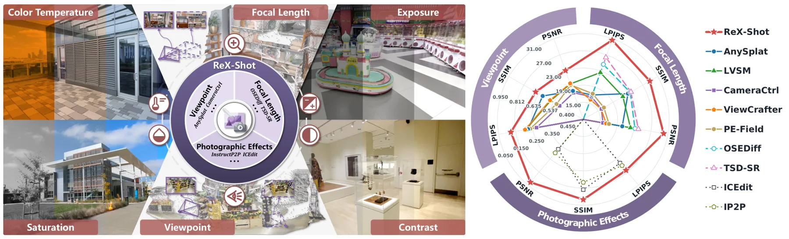
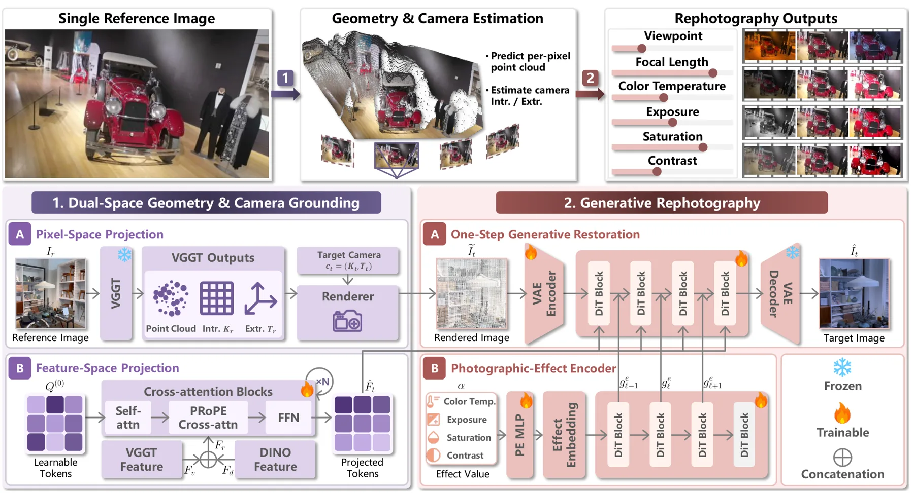
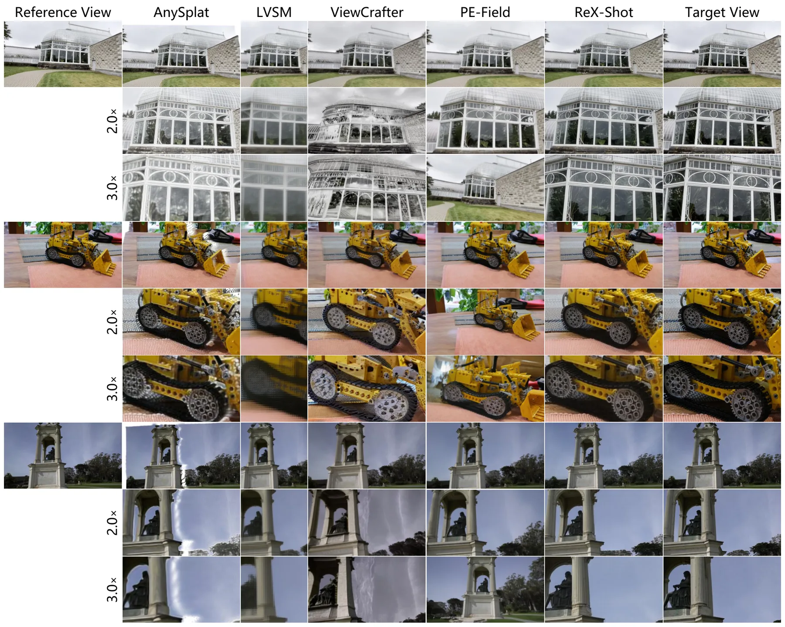
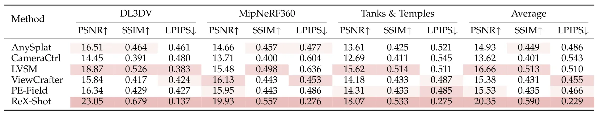
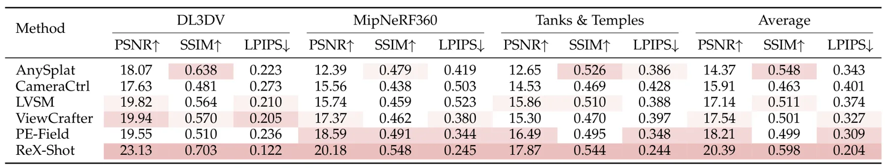
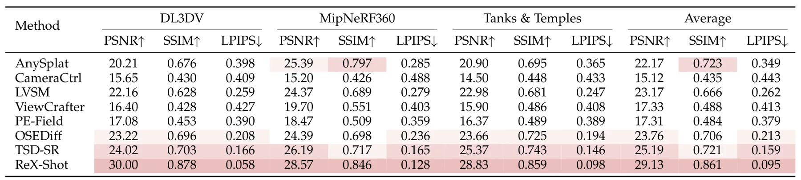

ReX-Shot：基于几何与相机约束的单图像重摄影ReX-Shot: Single-Image Rephotography via Geometry- and Camera-Grounded Generation
涉及单图像 3D 重建、相机模型和跨视点一致性，对生成式三维重建有参考意义；但与在线定位、SLAM 和 metric geometry 的直接关系较弱。
一句话工作总结
从单张图像进行几何约束的视点、焦距和外观联合重摄影，关注单图 3D 重建误差下的生成式补偿。
摘要
ReX-Shot 从单张参考图像生成指定视点、焦距和摄影效果的新图像。框架利用经过隐式变换的基础模型特征降低几何误差带来的投影偏差，将焦距放大建模为几何引导的超分辨率，并在 3D 感知生成骨干上实现跨视点的外观编辑。作者称其统一控制视点、焦距和参数化摄影效果，并在三类控制任务上超过代表性基线。
Single-image rephotography aims to synthesize new shots of a scene from a single reference image with specified viewpoints, focal lengths, and photographic effects, which are intrinsically coupled in imaging. Existing methods typically treat these factors separately and struggle under joint control: novel-view synthesis may introduce geometric distortions under focal-length changes, while super-resolution and instruction-guided editing remain confined to 2D and cannot reliably extend detail restoration or appearance control to novel viewpoints. We attribute these limitations to imperfect single-image 3D reconstruction and the sampling limit of continuous focal-length enlargement. To reduce projection bias from geometric errors, we use implicitly transformed foundation-model features for robust target-view guidance. We further formulate focal-length enlargement as a geometry-guided super-resolution problem and exploit generative detail priors to recover details lost during sparse 3D resampling. Built on this 3D-aware generative backbone, we lift photographic-effect control from 2D filtering to 3D-aware appearance editing, preserving content consistency across viewpoints and focal lengths. These components form ReX-Shot, a geometry- and camera-grounded generative framework for single-image rephotography. To our knowledge, ReX-Shot is the first unified framework to jointly control viewpoint, focal length, and parameterized photographic effects from a single image. Experiments show that ReX-Shot outperforms representative baselines across all three controls while enabling near-real-time interactive rephotography.
中文解读摘录
- 论文：arXiv:2608.18593 · PDF
- 作者：Ruiqi Zhang 等 · 项目页
- 核心方法：从单图像重建出发，联合控制新视点、焦距和参数化摄影效果，以几何引导超分辨率和 3D 感知生成补偿稀疏重采样造成的细节损失。
- 判断：对单图像三维重建和生成式新视图有参考意义，但与在线定位、metric geometry 和 SLAM 的直接关联有限。
- 评分：6.5/10。
图表/页面预览
{kind=link}

{kind=link}

{kind=link}

{kind=link}

{kind=link}

{kind=link}
